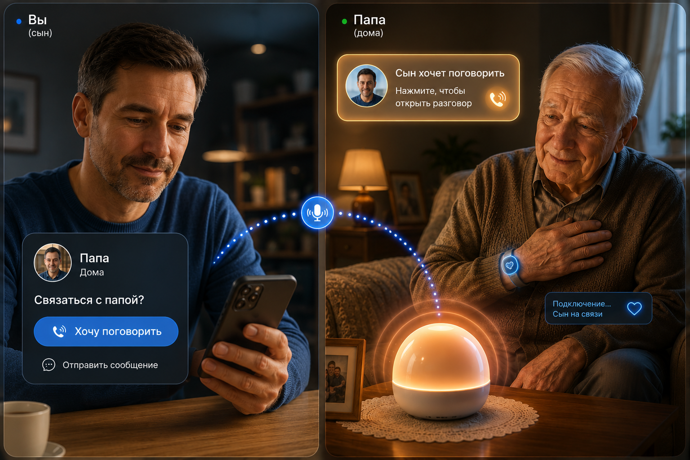

VoiceBridge / Lunara Care
Платформа голосового присутствия и безопасности для пожилых людей и их семей.
Одно касание устройства → уведомление семье → живой голосовой канал.
Мы убираем интерфейс между пожилым человеком и его близкими: без смартфона, без экрана, без приложений на стороне папы или мамы.

20:46
Проблема не в голосе. Проблема в интерфейсе.
Пожилой человек может говорить, но часто не может легко начать связь через смартфон. Нужно найти телефон, разблокировать экран, открыть приложение, найти контакт, начать звонок и дождаться ответа. Для семьи это становится постоянной тревогой.
Пожилой человек
Одиночество, сложные телефоны, страх нажать не туда.
Взрослые дети
Тревога на расстоянии и отсутствие быстрого живого контакта.
Care services
Нехватка персонала и позднее обнаружение тревожных ситуаций.
VoiceBridge убирает интерфейс полностью.
У родственника приложение. У пожилого человека домашнее устройство. Голос доходит почти мгновенно, а ответ возможен касанием, удержанием, голосом или запросом “хочу поговорить”.

От простого голосового моста к платформе заботы.
VoiceBridge начинается с максимально простого сценария связи. Затем вокруг него добавляются ранний сигнал, браслет безопасности, домашние датчики и Lunara AI.
MVP now
Platform expansion

Интеллектуальный браслет безопасности.
Браслет становится вторым контуром безопасности: SOS, активность, длительная неподвижность, возможные падения и вибро-подтверждения.
SOS
Одно удержание кнопки отправляет тревогу семье.
Активность
Движение, неподвижность и необычно низкая активность.
Падение
Резкий удар и отсутствие движения после него.
Вибрация
Подтверждение SOS, связи или доставки сообщения.

Почему это отличается от Alexa, смартфона и тревожной кнопки.
Рынок ухода стареет быстрее, чем растёт персонал.
Initial wedge: Молдова + Румыния. Следующий шаг: Восточная Европа. Долгий горизонт: global elderly care tech.
65+ Romania
Romanians abroad
Elderly Care Tech
annual growth
Что мы ищем.
Seed / strategic angel / hardware-healthtech partner для первой партии устройств, деплоя платформы и пилотов в Молдове и Румынии.
Alexei Ivantov
Founder, VoiceBridge / Lunara AI
+373 79 676 487
wertikoo@yahoo.com
Связаться с фаундером